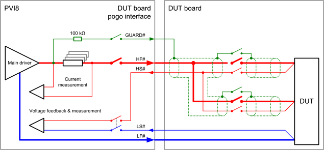

PVI8 output pogo pins
Some specific electrical design rules must be considered for the PVI8 outputs to ensure that the PVI8 specifications are met.
HF# and LF#
These two pogo pins are the high force output and the corresponding return pin. The following rules must be respected for these pins.
The card is able to compensate a voltage drop of maximum 5.0 V per line from the pogo pins to the force-sense connection at the DUT. The resistance of the connections in between must be low enough to fit to this requirement: The maximum supported resistance for a 10 A pulse will be 500 mΩ.
- LF# is the floating ground of a PVI8 channel and needs therefore always a low impedance connection to a defined potential. The defined potential can be any resource like another pin, the DUT or the DUT board ground that is able to set the desired voltage taking into account the channel's parasitic capacitance to system ground.
- The force lines "HF#" and "LF#" are wired to three pogo pins. These three pogo pins must be connected in parallel on the DUT board to ensure that the specification for the card and the maximum ratings for the pogo pins can be met.
- A low inductive layout must be selected. HF# and LF# should be routed in parallel to the DUT to minimize the area between the two lines.
For more information regarding the voltage drop on the force lines see application note "Maximum voltage drop on HF# and LF# at the end of the force voltage range" below.
HS# and LS#
HS# and LS# are the sense pogo pins of the channel. The lines from the pogo pin to the DUT should be routed in parallel to the related force line.
GUARD#
The GUARD# pogo pin carries the same voltage as the HF# and HS# pogo pins. The pin is used to guard these two lines and to minimize the parasitic leakage current from the two lines to DUT board ground or to other lines. The line connected to this pin should shield or surround the HF# and HS# line from the pogo pins to the DUT as shown in the diagram below.

The diagram above shows how the guard line is used on the DUT board. GUARD# is used to shield HF# and HS# from the pogo interface to the DUT connection. The internal guard lines of the card that are used to shield the HF# and HS# lines on the card are not shown in this example.
Application note
- Maximum voltage drop on HF# and LF# at the end of the force voltage range
- The maximum supported voltage drop is 5.0 V for each of the two force lines.
The available main driver headroom limits this value at the end of the force
voltage range: The sum of the voltage drop on the HF# line plus the voltage
drop on the LF# line must not exceed the value that is defined in the table
below.
Force voltage range Forced voltage Maximum voltage drop on HF# and LF# line Bipolar range (±40 V) -40.0 ... -35.0 V 45.0 V - |Forced voltage| total voltage drop on HF# + LF# line 1) -35.0 ... +35.0 V 5.0 V for each of the two lines +35.0 ... +40.0 V 45.0 V - Forced voltage total voltage drop on HF# + LF# line 1) Unipolar range (0.5 V to 80 V) +0.5 ... +5.5 V 4.5 V + Forced voltage total voltage drop on HF# + LF# line 1) +5.5 ... +75.0 V 5.0 V for each of the two lines +75.0 ... 80.0 V 85.0 V - Forced voltage total voltage drop on HF# + LF# line 1) The violation of this limitation will result in a "Low headroom" error and the disconnection of the channel. An optimized layout must be used for the two lines to minimize the voltage drop if high currents are expected at the end of the force voltage range.
Functional changes
- Introduced in SmarTest 7.3.1